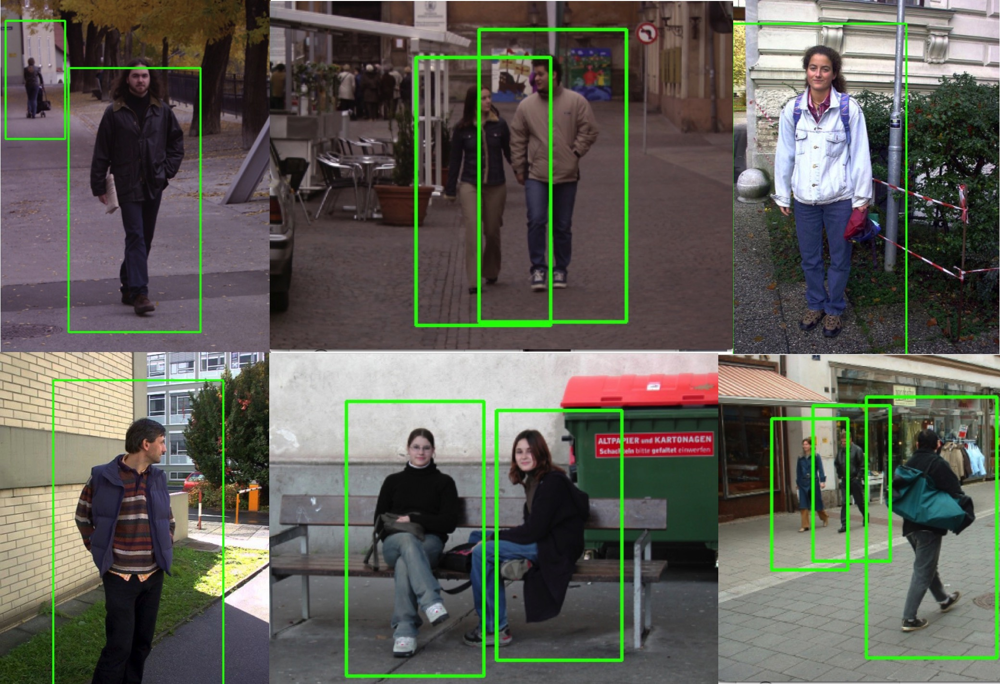

Concept Illustration
Lucas is a household security robot which can keep your home safe. He patrols around the house at random and automatically so that if any stranger invades your place, he will alarm you. If he detect something intrudes, he will follow behind that stuff or you can set to the manual mode.
Materials I will use in the final project demo:
(1)Boe-Bot Robot: movement, speaker, infrared and touch wire sensors.
(2)Nitrogen6x: control, 3D-accelerometer, and webcam to detect.
There are some animation and concept demo below:
1. Robot Controller Simulation (with FRDM-KL25Z)
You can set the robot to manual mode and use the 3-D accelerometer(FRDM-KL25Z) to control the robot move.
Just turn the FRDM-KL25Z upsite down or turn right/left.
2. Robot Moving Simulation

Lucas moves randomly at a certain range to scare anything being close. Besides, he can monitor the entrance of your place if anyone intrudes.
3. Robot Tracing Animation
The movement of the rectange indicates the step of the stranger. Lucas will follow behind and try to stop it somehow.
Meanwhile, he will make the alarm ring.
4. Get familiar with Webcam
5. OpenCV for Human Detection
These results are running on my computer.